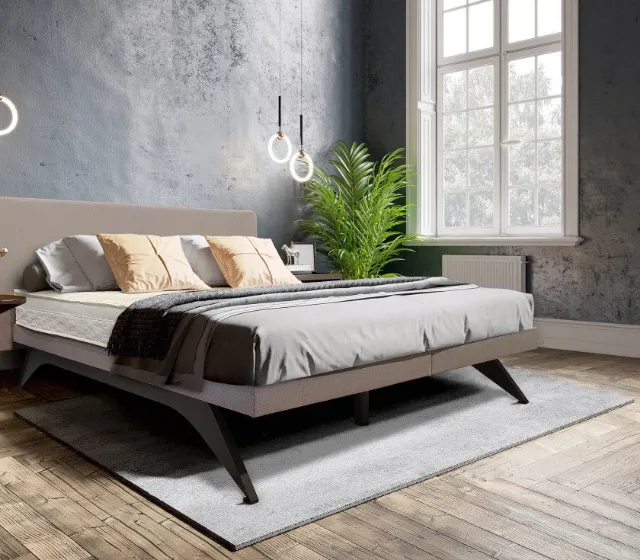
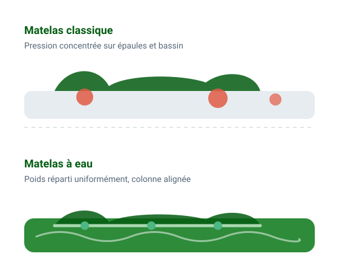

Spécialiste du lit à eau depuis 1994
Lit à eau et matelas réglables : soulagez votre mal de dos
Marque du confort du dos depuis 1988, La Maison du Dos vous accompagne dans le choix d'un lit avec un ou deux matelas à eau, d'un matelas à eau léger ou d'un matelas à fermeté réglable par télécommande.
- Depuis 1988confort du dos
- 7j/7conseil de 9h à 21h
- 22stabilisations au choix

- Livraison avec installationet réglages personnalisés
- Livraison gratuitedès 60 € d'achat
- Satisfait ou remboursévoir nos conditions de vente
- Facilités de paiementpayez à votre rythme
Notre catalogue
Trouvez la literie faite pour votre dos
Selon vos attentes et vos besoins, nous vous aidons à choisir parmi les articles qui répondent idéalement à vos critères.
-
Lits à eau
Un ou deux matelas à eau climatisés (MONO ou DUO), en vente en ligne ou sur devis.
Voir les lits à eau -
Matelas à eau légers & bébé
Le matelas à eau climatisé à poser sur un sommier fixe classique.
Découvrir -
Matelas à télécommande
Fermeté réglable par télécommande, compatibles avec les sommiers de relaxation.
Découvrir -
Linge de lit
Couettes, oreillers, surmatelas et draps-housses, dont le linge de lit Hefel conseillé depuis 1997.
Découvrir -
Accessoires, SAV & entretien
Conditionneurs, anti-algues et accessoires pour faire durer votre literie à eau.
Découvrir

Le lit à eau, notre spécialité
Pourquoi un matelas à eau soulage-t-il le dos ?
Dès que vous vous allongez, l'eau prend exactement la forme de votre corps. Le matelas ne s'affaisse pas : il s'adapte instantanément à votre position, avec une pression d'appui répartie uniformément.
- Un soutien sans usure : l'eau ne s'use pas, et un matelas à eau dure plus de 15 ans selon son entretien et sa qualité.
- Une température réglable, tiède en hiver et fraîche en été.
- 22 stabilisations pour choisir ensemble le soutien adapté à votre morphologie.
- Un réglage en eau en votre présence lors de l'installation, pour conserver les garanties des fabricants.
Sélection
Nos lits et matelas à eau
Matelas réglables
La fermeté idéale, réglée par télécommande
Nos matelas à fermeté réglable permettent d'adapter le soutien à vos besoins et s'utilisent aussi avec des sommiers de relaxation, ce qui n'est pas possible avec un matelas à eau.
Découvrir les matelas à télécommande- 1Matelas PureFermeté réglable par télécommande pour une personne.
- 2Matelas de santé LifeSuspensions à air avec réglage du soutien par télécommande.
- 3Matelas MatrairFermeté réglable et supports lombaires pour soulager le mal de dos.
Accompagnement
De votre premier appel à votre première nuit
- 01
Conseil personnalisé
Par téléphone ou WhatsApp, 7 jours sur 7 de 9h à 21h : nous étudions ensemble vos envies et vos besoins de confort.
- 02
Choix du matelas
Type de lit, dimensions, stabilisation : nous choisissons ensemble le matelas à eau qui vous satisfera pleinement.
- 03
Livraison & installation
Installation d'environ 2 à 3 heures, avec le réglage en eau réalisé en présence des futurs utilisateurs.
- 04
Entretien & SAV
Conseils d'entretien à l'installation, produits d'entretien et service client à votre écoute.
Qui sommes-nous
Le confort du dos, notre métier depuis 1988
Créée en 1988, La Maison du Dos propose une literie de qualité pour apporter un supplément de confort à chacun, et particulièrement soulager les personnes qui souffrent du dos. Spécialiste du lit à eau depuis 1994, elle a quitté sa boutique de Mulhouse pour se consacrer à la vente en ligne.
Depuis la Haute-Marne, nous livrons et installons nos lits à eau en France et en Europe, notamment au Benelux, en Suisse et en Allemagne. Nous vous conseillons aussi le linge de lit Hefel depuis 1997.
Découvrir notre histoire- 1988
- création de La Maison du Dos
- 1994
- spécialiste du lit à eau
- 1997
- linge de lit Hefel
- 7j/7
- service client de 9h à 21h
Avis clients
Ils dorment mieux, ils en parlent
Nos avis sont collectés et contrôlés par la Société des Avis Garantis, auprès d'acheteurs authentifiés.
Questions fréquentes
Tout savoir sur le matelas à eau
Un matelas à eau est-il bon pour le dos ?
Dès que vous vous allongez, l'eau prend exactement la forme de votre corps. Le matelas ne s'affaisse pas : il s'adapte instantanément à votre position. Ce soutien, combiné à une faible pression d'appui et à une chaleur agréable, est un bienfait pour votre dos.
A-t-on le mal de mer sur un matelas à eau ?
Non. L'eau ne bouge que lorsque vous bougez vous-même, et ce mouvement est immédiatement amorti par la stabilisation intégrée au matelas.
Quel est le poids d'un lit à eau ?
Selon le modèle, un lit à eau double pèse jusqu'à 800 kg, soit 150 à 200 kg/m², une charge répartie par le socle. En plus de trente ans d'installations, nous n'avons jamais eu à renoncer à un montage : là où l'on peut installer un congélateur rempli, on peut installer un lit à eau.
Combien consomme un matelas à eau ?
Pour un lit à eau dual, comptez environ 1,32 à 1,53 kWh par jour selon la température réglée, l'isolation et la pièce, soit en moyenne une dizaine d'euros par mois sur l'année.
Comment entretenir un lit à eau ?
Purgez bien l'air des matelas la première semaine, puis ajoutez un conditionneur anti-algues une à deux fois par an selon le produit. Il n'est pas nécessaire de changer l'eau, sauf en cas de déménagement.
Un projet de literie ? Parlons-en.
De façon humaine et sincère, un spécialiste vous répond 7 jours sur 7, de 9h à 21h.